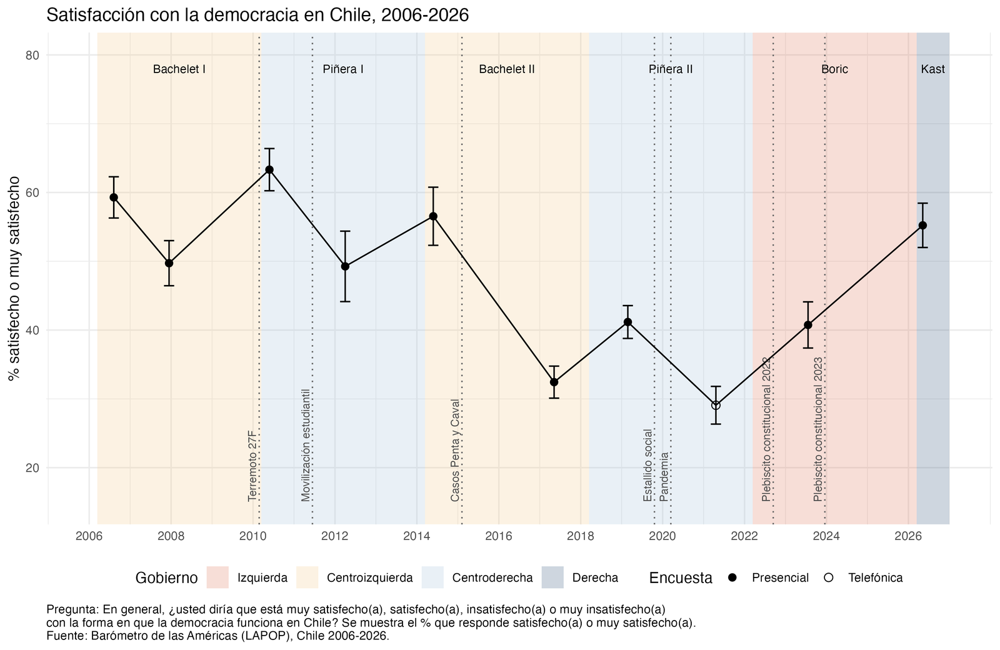
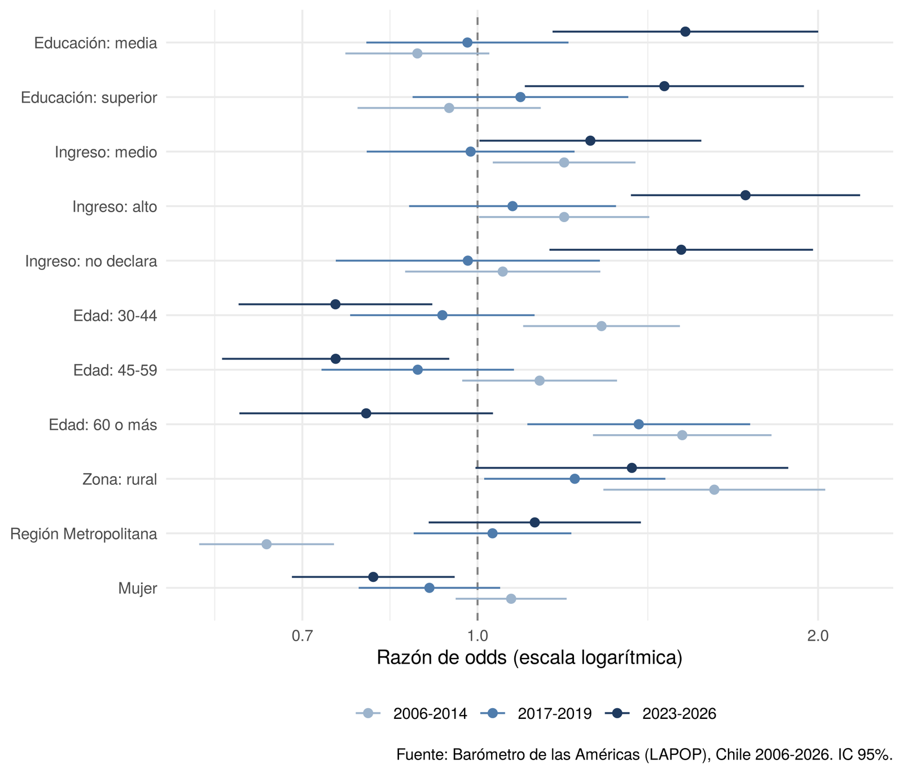
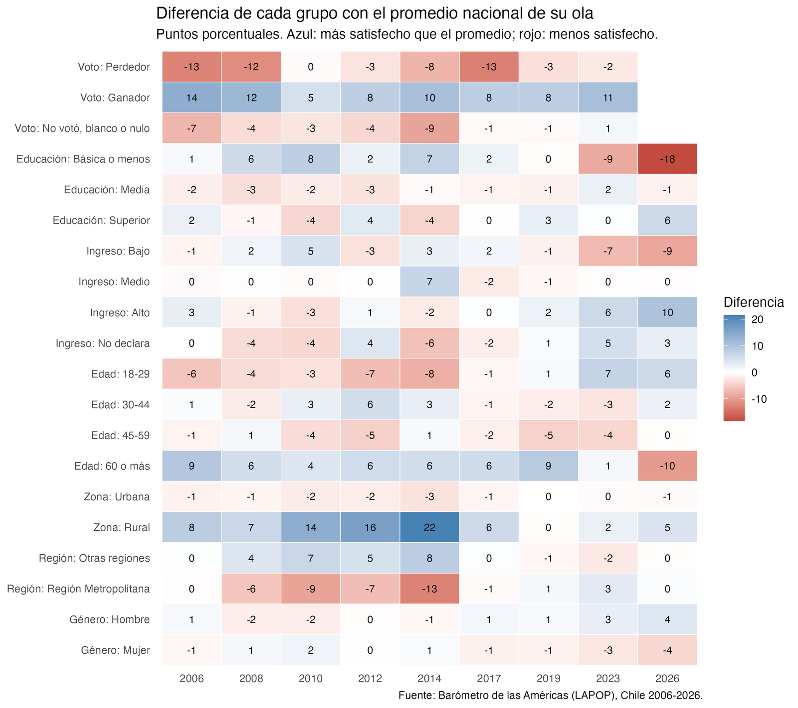

Ganadores y perdedores: las bases de la insatisfacción democrática en Chile, 2006–2026
Entre 2006 y 2026, la proporción de chilenos satisfechos con el funcionamiento de la democracia no cayó de manera lineal. Osciló entre 49% y 63% hasta 2014, se desplomó a 32% en 2017, antes del estallido social, y subió a 55% en 2026. Este trabajo pregunta qué grupos están más y menos satisfechos y si esas diferencias cambiaron en el tiempo. Evalúa cuatro condicionantes propuestas por la literatura, que son haber votado por el ganador o el perdedor de la elección presidencial, la posición socioeconómica, la edad y el acceso a la ciudadanía en el territorio.
Esta entrada resume los resultados de la segunda entrega del curso. El informe completo se publicará aquí después de la entrega final.
Datos y métodos
El análisis usa las diez olas del Barómetro de las Américas (LAPOP) para Chile entre 2006 y 2026. La variable dependiente es el ítem PN4, que pregunta por la satisfacción con la forma en que la democracia funciona en Chile, recodificado como satisfecho o muy satisfecho frente al resto. Los modelos son regresiones logísticas con efectos fijos de ola y el diseño muestral de cada encuesta, estimadas sobre las nueve olas presenciales. La ola telefónica de 2021 solo se usa en la serie nacional. Todo el análisis es reproducible en R desde el repositorio.

Cuatro resultados
1. Haber votado por el ganador es la condicionante más fuerte
Quienes votaron por el presidente en ejercicio tienen odds de estar satisfechos 1,9 veces mayores que quienes votaron por otro candidato. En probabilidades, la diferencia es de 15,7 puntos porcentuales, casi el doble que cualquier otra condicionante. La brecha es positiva en todas las olas con dato de voto y no crece en el tiempo.
| Comparación | Grupo | Referencia | Diferencia (puntos) |
|---|---|---|---|
| Ganador vs. perdedor (2006–2023) | 58,9 | 43,2 | 15,7 |
| Rural vs. urbana | 57,3 | 48,7 | 8,6 |
| 60 o más vs. 18–29 | 54,5 | 48,3 | 6,2 |
| Ingreso alto vs. bajo | 52,5 | 47,1 | 5,4 |
| Región Metropolitana vs. otras regiones | 46,7 | 51,9 | −5,2 |
| Superior vs. básica o menos | 50,3 | 50,5 | −0,2 |
| Mujer vs. hombre | 49,5 | 50,1 | −0,6 |
Probabilidad predicha de estar satisfecho o muy satisfecho (%), manteniendo las demás características observadas de los entrevistados. Para el voto, olas 2006–2023, porque la ola 2026 no preguntó por el voto.
2. Lo socioeconómico empieza a pesar después de 2019
Hasta 2019, la educación no diferenciaba la satisfacción y el ingreso lo hacía poco. En 2023–2026, las personas con educación media o superior y las de mayor ingreso pasan a estar claramente más satisfechas. Un test de Wald confirma que ambos efectos cambian entre períodos.
3. La ventaja de las personas mayores se invierte
Hasta 2019, las personas de 60 años o más eran las más satisfechas. En 2023–2026 son las más jóvenes las que están más satisfechas. Un cambio tan rápido es difícil de explicar por la socialización temprana de cada generación, y es más compatible con la idea de que la evaluación del presente pesa más.

4. El territorio funciona al revés de lo esperado
Se esperaba menor satisfacción donde el acceso a los servicios del Estado es más débil. Sin embargo, hasta 2014 la población rural estaba más satisfecha que la urbana y los residentes de la Región Metropolitana, menos que los del resto del país. Desde 2017 esas diferencias se reducen. La medición territorial capta solo una parte del concepto, por lo que el resultado no respalda la hipótesis, pero tampoco permite descartarla.

Qué cambió
El resultado central no es un aumento general de la desigualdad en la satisfacción, sino un cambio en quiénes están satisfechos. Hasta mediados de la década pasada lo estaban más las personas mayores, de zonas rurales y de fuera de Santiago. En 2023–2026, lo están más las personas con más educación e ingreso, los jóvenes y los hombres.
Alcance
El voto se mide con el voto recordado, que sobrerrepresenta a los ganadores, y no se preguntó en 2026, por lo que no se puede descartar que parte del cambio reciente responda a la composición del nuevo electorado ganador. Las muestras rurales son pequeñas y los resultados son asociaciones, no efectos causales. Estos resultados son preliminares y pueden cambiar en la entrega final.
These data were supplied by LAPOP Lab at Vanderbilt University, which takes no responsibility for any interpretation of the data.
← Volver al blog